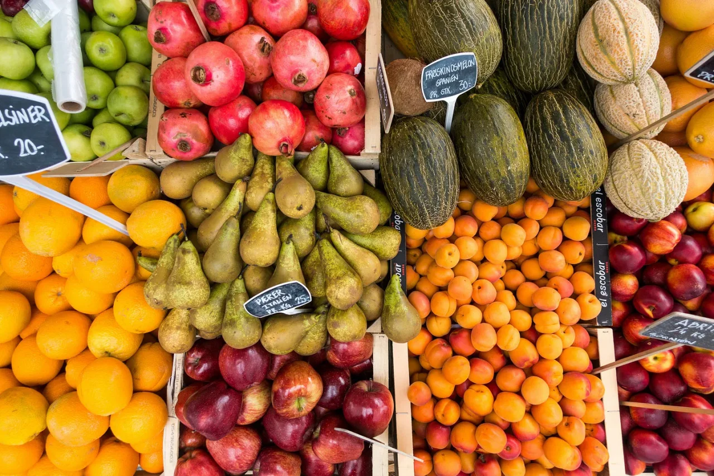

칸탈루프는 자신이 완벽하게 익었다고 우겼지만, 엄마는 그 말을 전혀 믿지 않았다.
[The cantaloupe insisted it was perfectly ripe, but Mom wasn’t having any of it.]
“너무 물렁물렁하네,” 엄마는 얼룩진 껍질을 꾹꾹 누르며 중얼거렸다. “안은 아마도 푸석푸석할 거야.”
[“You’re too soft,” she muttered, squeezing its spotted rind. “And probably mealy inside.”]
“저는 푸석푸석하지 않아요!” 칸탈루프가 항의했지만, 12살 소피아만이 그 말을 들을 수 있었다. “저는 완벽하게 햇볕을 받아 달콤해요. 어머님은 제대로 모르시는 거예요.”
[“I am not mealy!” the cantaloupe protested, though only twelve-year-old Sofia could hear it. “I’m perfectly sun-kissed and sweet. Your mother doesn’t know what she’s talking about.”]
소피아가 키득거리자 엄마는 눈썹을 치켜올렸다. 아빠는 세 통로 건너편에서 일반 요구르트와 그릭 요구르트의 차이점을 놓고 휴대폰과 실랑이를 벌이고 있었다.
[Sofia giggled, earning a raised eyebrow from her mom. Dad was three aisles over, arguing with his phone about the difference between regular and Greek yogurt.]
“뭐가 그렇게 웃기니?” 엄마가 기분이 상한 칸탈루프를 다른 칸탈루프들 사이에 도로 놓으며 물었다.
[“What’s so funny?” Mom asked, placing the offended cantaloupe back among its siblings.]
“아무것도 아니에요,” 소피아가 진열대에서 미친 듯이 흔들어대는 바나나 다발을 보며 말했다.
[“Nothing,” Sofia said, watching a bunch of bananas wave frantically from their display.]
“저를 골라주세요!” 가장 초록색인 바나나가 외쳤다. “목요일이면 완벽해질 거예요!”
[“Pick me!” the greenest one called. “I’ll be perfect by Thursday!”]
농산물 코너는 늘 그들의 주간 장보기에서 가장 시끄러운 곳이었다. 소피아는 지난달, 12번째 생일이 지난 직후 이 선물을 발견했는데, 그때 한 사과가 그녀의 새 헤어스타일을 칭찬했던 것이다. 처음에는 상상하는 거라고 생각했지만, 대화는 계속 이어졌고, 매번의 장보기는 여러 수다스러운 대화를 동시에 관리해야 하는 모험이 되었다.
[The produce section was always the noisiest part of their weekly shopping trips. Sofia had discovered the gift last month, right after her twelfth birthday, when an apple had complimented her new haircut. At first, she thought she was imagining things, but then the conversations kept coming, turning every grocery run into an adventure in managing multiple chatty conversations at once.]
“당신의 카트가 꽤 비어 보이네요,” 위엄 있는 상추 한 포기가 말했다. “기분 전환으로 채소 좀 담아보시는 건 어떨까요?”
[“Your cart is looking rather empty,” observed a dignified head of lettuce. “Perhaps some greens to brighten things up?”]
엄마는 휴대폰을 보며 카트를 밀었다. “소피아, 얘야, 토마토 좀 가져다 줄래?”
[Mom pushed the cart past, consulting her phone. “Sofia, honey, can you grab some tomatoes?”]
“로마 토마토들이 실존적 위기를 겪고 있어요,” 소피아는 혼잣말로 중얼거리며 토마토 진열대로 다가갔고, 그곳에서는 실제로 철학적 토론이 진행 중이었다.
[“The Roma ones are having an existential crisis,” Sofia whispered to herself, approaching the tomato display where indeed, a philosophical debate was underway.]
“우리가 과일일까, 채소일까?” 한 토마토가 고민했다. “그리고 이 포스트모던 농산물 패러다임 속에서 그게 중요한 걸까?”
[“But are we fruits or vegetables?” one tomato pondered. “And does it matter in this post-modern produce paradigm?”]
“그냥 우리를 빨리 골라가세요,” 다른 토마토가 한숨 쉬며 말했다. “이 대화는 매주 화요일마다 반복된다고요.”
[“Just pick us already,” sighed another. “This conversation happens every Tuesday.”]
“적어도 당신들은 정체성의 위기라도 있잖아요,” 근처의 오이가 투덜거렸다. “평생 피클 예비군 취급받는 신세는 어떨까요.”
[“At least you have an identity crisis,” grumbled a nearby cucumber. “Try being mistaken for a pickle-in-waiting your whole life.”]
아빠가 모퉁이를 돌아 나타났는데, 그의 카트에는 이미 집으로 가는 길에 말다툼을 시작할 물건들이 가득했다. 아몬드 밀크와 일반 우유는 절대 사이가 좋지 않았고, 칼슘 함량과 환경 영향에 대한 그들의 수동 공격적인 말다툼은 도로의 매 방지턱을 지날 때마다 더욱 격렬해졌다.
[Dad appeared around the corner, his cart already loaded with items Sofia knew would start bickering on the drive home. The almond milk and regular milk never got along, their passive-aggressive comments about calcium content and environmental impact growing more heated with every bump in the road.]
“요구르트 찾았어,” 그가 의기양양하게 발표했다. “근데 그릭 요구르트들이 왜 그렇게 특별한 척하는지 아직도 이해가 안 가네.”
[“Found the yogurt,” he announced triumphantly. “Though I still don’t understand why the Greek ones think they’re so special.”]
“우리가 단백질이 더 높다고요!” 카트에서 웅웅거리는 소리가 들려왔다.
[“We’re higher in protein!” came a muffled voice from his cart.]
“그리고 문화도요,” 다른 요구르트 용기가 덧붙였고, 일반 요구르트들은 눈을 굴렸다.
[“And culture,” added another yogurt container, earning eye-rolls from the regular yogurts.]
“맞는 브랜드 산 거야?” 엄마가 그의 카트를 들여다보며 물었다. “지난번엔 과일이 바닥에 있는 걸 샀잖아.”
[“Did you get the right brand?” Mom asked, peering into his cart. “Last time you bought the one with fruit on the bottom.”]
“세상에나,” 아빠가 눈을 굴렸다. “요구르트를 저어 먹어야 한다니, 세상이 멸망할 일이네.”
[“Heaven forbid,” Dad rolled his eyes. “The world might end if we have to stir our yogurt.”]
“저어 먹는 게 인격을 형성하는 거예요,” 도전적인 딸기 요구르트가 속삭였다.
[“The stirring builds character,” whispered a defiant strawberry yogurt.]
소피아는 로마 토마토 여섯 개를 골랐는데, 조용한 것들을 신중하게 골랐다. 그녀는 수다스러운 농산물이 대화하느라 모든 에너지를 소진해서 더 빨리 상한다는 것을 알게 됐다. 지난주에는 특히나 말이 많던 셀러리 다발을 버려야 했는데, 그건 말하다가 스스로를 시들게 만들었다.
[Sofia selected six Roma tomatoes, carefully choosing the quieter ones. She’d learned that the chatty produce tended to go bad faster, as if they used up all their energy in conversation. Last week, they’d had to throw out a particularly verbose bunch of celery that had talked itself into wilting.]
“당신의 딸은 안목이 훌륭하군요,” 피망이 특별히 누구를 겨냥하지 않고 말했다. “다른 손님들과는 달리 우리 말을 실제로 듣는다는 걸 보세요.”
[“Your daughter has excellent taste,” a bell pepper commented to no one in particular. “Notice how she actually listens to us, unlike some shoppers.”]
쇼핑 통로를 지나가면서 소피아는 끊임없는 잡담을 무시하려 했다. 오늘따라 아침 시리얼들이 특히 시끄러웠는데, 각각의 상자들이 자신이 이웃보다 더 영양가 있다고 자랑했다. 새로 들어온 유기농 그래놀라는 통곡물의 중요성에 대해 열정적인 연설을 하고 있었고, 설탕 듬뿍 든 시리얼들은 안에 숨겨진 경품 이야기로 아이들의 관심을 끌려 했다.
[As they moved through the aisles, Sofia tried to tune out the constant chatter. The breakfast cereals were particularly loud today, each box promising to be more nutritious than its neighbors. A new organic granola was giving an impassioned speech about the importance of whole grains, while the sugary cereals tried to distract children with tales of prizes hidden inside.]
유기농 코너는 자신들의 순수함을 자랑하는 거만한 제품들로 가득했고, 과자 통로는 세일과 한정판 맛을 외치는 화려한 포장들의 아수라장이었다. 소피아는 쿠키 한 봉지가 칼로리를 걱정하는 다이어트 크래커를 설득하려 하는 모습을 지켜보았다.
[The organic section was full of smug products bragging about their purity, while the snack aisle was a chaos of colorful packages shouting about sales and limited-time flavors. Sofia watched as a package of cookies tried to convince a diet-conscious cracker that life was too short for calorie counting.]
“너의 문제가 뭔지 알아?” 초콜릿 칩이 반짝이는 쿠키가 말했다. “넌 숫자에 너무 집착하고 있어. 인생을 즐겨봐!”
[“You know what your problem is?” the cookies said, their chocolate chips gleaming. “You’re too wrapped up in numbers. Live a little!”]
“엄마,” 파스타 소스를 놓고 말다투는 부모님을 보며 소피아가 말했다. “음식에도 감정이 있을까요?”
[“Mom,” Sofia said, watching her parents bicker over which pasta sauce to buy, “do you ever wonder if food has feelings?”]
“넌 정말 상상력이 풍부하구나,” 마리나라 소스의 격렬한 항의에도 불구하고 마늘 허브맛을 고르며 엄마가 미소 지었다. “이제 쇼핑 카트가 피곤하다고 말할 거니?”
[“What an imagination you have,” Mom smiled, selecting the garlic and herb variety despite the marinara’s vocal protests. “Next you’ll tell me the shopping cart is tired.”]
“사실이에요,” 카트가 삐걱거렸다. “바퀴에 기름이 좀 필요해요.”
[“Actually,” the cart creaked, “I could use some oil on my wheels.”]
지나가는 직원이 카트들을 밀었고, 소피아는 거친 취급에 대한 그들의 금속성 합창 불평을 들었다. 냉동식품 코너에서는 아이스크림 맛들이 쇼핑객들에게 차가운 아리아를 들려주었고, 냉동 채소들은 서로 모여 앉아 신선 농산물이었던 시절 이야기를 나누고 있었다.
[A passing store employee pushed a line of carts, and Sofia heard their metallic chorus of complaints about the rough treatment. In the freezer section, ice cream flavors serenaded shoppers with frosty arias, while the frozen vegetables huddled together, sharing stories of their fresh produce days.]
“햇볕 아래서 자라던 때가 생각나네,” 냉동완두콩 한 봉지가 한숨 쉬었다. “그때가 좋았지.”
[“Remember when I was growing in the sun?” sighed a bag of frozen peas. “Those were the days.”]
아빠가 목록을 확인했다. “빵만 사면 끝이네. 소피아, 좋은 빵 고르는 걸 도와줄래?”
[Dad checked his list. “Just need bread and we’re done. Sofia, want to help me pick a good loaf?”]
베이커리 코너에서는 사워도우가 아재개그를 하고 있었고, 펌퍼니클은 구석에서 우울해하고 있었다. 소피아는 조용히 흥얼거리고 있던 통밀빵을 골랐다. 프랑스 바게트가 과장된 억양으로 그들의 관심을 끌려 했지만, 소피아는 겉만 화려한 빵들이 실속 없는 경우가 많다는 걸 알고 있었다.
[In the bakery section, the sourdough was telling dad jokes while the pumpernickel brooded in the corner. Sofia chose a wheat bread that had been quietly humming to itself. A French baguette tried to get their attention with an exaggerated accent, but Sofia had learned that the showier breads often turned out to be all crust and no substance.]
계산대에서 소피아는 물건들이 하나씩 스캔되며 각자의 작은 이야기를 들려주는 것을 지켜보았다. 칸탈루프 말이 맞았다 - 내일 아침 식사에 완벽했을 것이다. 하지만 가족과의 장보기에서는 그런 거였다: 가장 좋은 대화는 다른 사람들은 들을 수 없는 것들이었다.
[At checkout, Sofia watched the items scan one by one, each telling its little story. The cantaloupe had been right – it would have been perfect for tomorrow’s breakfast. But that was the thing about grocery shopping with her family: the best conversations were the ones nobody else could hear.]
장바구니를 차에 싣는 동안, 소피아는 새로운 집으로 가게 된 것에 대해 흥분된 봉지들의 바스락거리는 소리를 들었다. 냉동완두콩은 이미 트렁크 온도에 대해 불평하고 있었고, 빵은 위에 무거운 것을 올리지 말라고 모두에게 경고했다.
[As they loaded the groceries into the car, Sofia heard the bags rustling with excitement about their new homes. The frozen peas were already complaining about the trunk’s temperature, while the bread warned everyone not to stack anything heavy on top of it.]
“오늘 꽤 조용하네,” 주차장을 빠져나오며 엄마가 말했다. “괜찮은 거야?”
[“You’re awfully quiet today,” Mom said as they pulled out of the parking lot. “Everything okay?”]
소피아는 뒷자리에서 들려오는 식료품들의 부드러운 교향곡을 들으며 미소 지었다. “저녁 식사 생각하고 있어요,” 파스타가 소스에게 레시피를 속삭이는 동안 그녀가 말했다.
[Sofia smiled, listening to the gentle symphony of grocery conversations in the back. “Just thinking about dinner,” she said, as the pasta whispered recipes to the sauce.]
가끔 부모님께 자신의 선물에 대해 말하고 싶다는 생각이 들었지만, 그러면 모든 장보기가 평범해 보이지만 사실은 전혀 평범하지 않은 수천 가지 물건들의 목소리로 전해지는 작은 마법 이야기라는 것을 혼자만 아는 특별함을 잃게 될 것 같았다.
[Some days she thought about telling her parents about her gift, but then she’d miss being the only one who knew that every shopping trip was its own little magical story, told in the voices of a thousand ordinary things that weren’t so ordinary after all.]